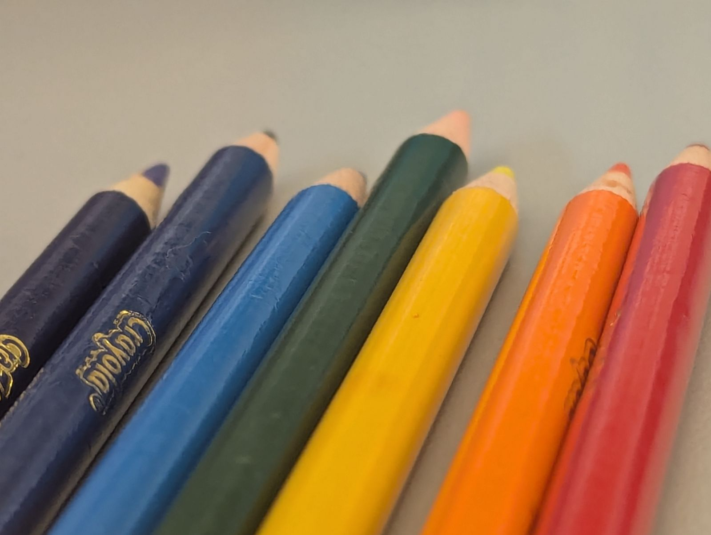

Mandarin Orange Soufflé Salad

Ingredients
- 1¼ C orange juice (preferably from concentrate, thawed and diluted)
- 1 tbs (1 envelope) unflavored gelatin
- 1 C sugar
- 2 large egg yolks
- 1½ tbs fresh lemon juice
- 1 C heavy cream
- ½ C canned mandarin orange sections (4-oz can)
Directions
- Bloom Gelatin: Add ¼ cup orange juice to a small bowl, sprinkle gelatin over it, stir, and set aside to soften. Prepare an ice bath.
- Cook Custard: In a saucepan, combine remaining orange juice, sugar, and egg yolks. Heat gently, stirring constantly, until steaming and slightly thickened - do not boil.
- Finish Base: Stir in softened gelatin and lemon juice until dissolved. Transfer to a clean bowl.
- Cool: Set the bowl in the ice bath, stirring occasionally until cooled.
- Whip Cream: Whip heavy cream to soft peaks.
- Fold: Gently fold some whipped cream into the custard to loosen, then fold in the remaining cream until fully incorporated.
- Mold: Place 3-4 mandarin orange segments in the bottom of six 5-oz fluted molds. Fill with the soufflé mixture.
- Chill: Cover with plastic wrap and refrigerate at least 4 hours, preferably overnight, until firm.
Unmolding Tips
- Make sure the soufflés are fully set and well chilled before unmolding.
- Dip each mold briefly (5-10 seconds) in warm (not hot) water, keeping water below the rim.
- Run a thin knife or offset spatula gently around the edge if needed.
- Place a serving plate on top of the mold, invert, and lift the mold straight up.
- If it doesn't release, repeat the warm-water dip for a few seconds and try again - don't force it.
- For plastic or silicone molds, gentle pressure around the sides can help break the seal.
Chef's Notes
- This is a Neiman Marcus copycat recipe
Michael Fritsche
mbf@fritsche.org